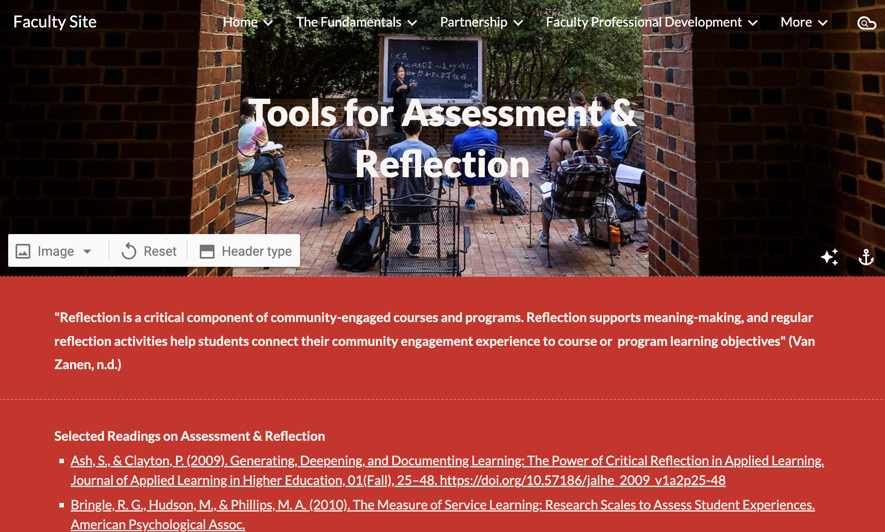
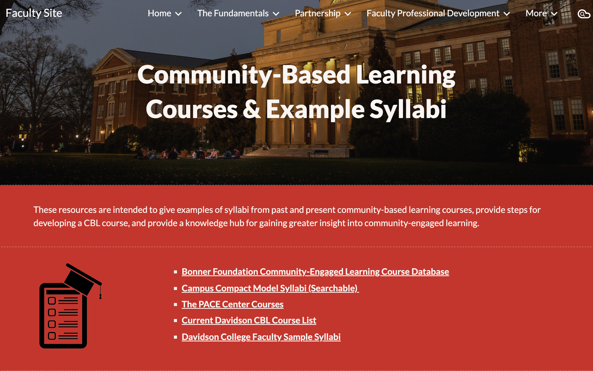

Task 1 - Find Resources for "Assessment and Reflection"
User experience: The user struggled to find the tab and navigated all over the
page, eventually using the "Control + F" function to locate it.
Time: 20 seconds
Possible Recommendation: Simplify the navigation bar structure; ensure page order
consistency.

Task 2 - Find example syllabi on Community Engaged Learning.
User experience: The first thing they want to see as a faculty member engaging
in this work.
Time: 1 minute 35 seconds
Possible Recommendation: Make the order for the drop-down menu the same as the
page.

Task 3 - Find funding opportunities for faculty engaging in this type of coursework.
User experience: Easier to find as the user was getting a hang of the website.
Time: 10 seconds
Possible Recommendation: Add this to the main page of the website.
Task 4 - Navigate to the “Engaging in Democracy” webpage.
User experience: Engaging in Democracy link to the webpage.
Time: 1 minute 58 seconds
Possible Recommendation: Add the link without making it a “button”.
Task 5 - From the main page, navigate to another page and evaluate the layout.
User experience: Already convinced on CBL, looking for an outcomes page.
Time: 1 minute 50 seconds
Possible Recommendation: Add an Outcomes page with Example projects and
testimonials.